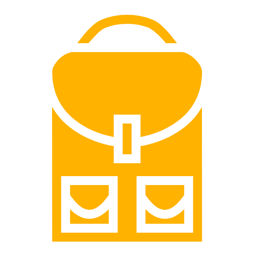
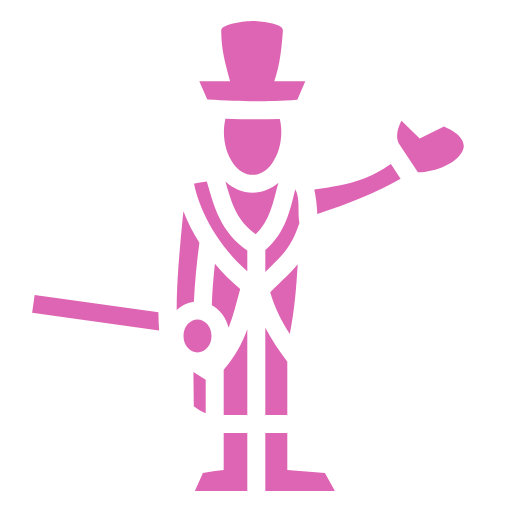
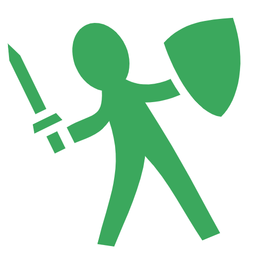
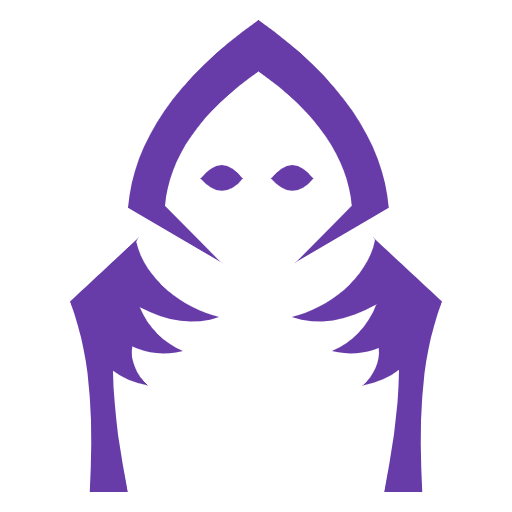
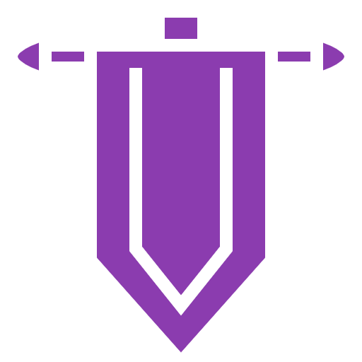
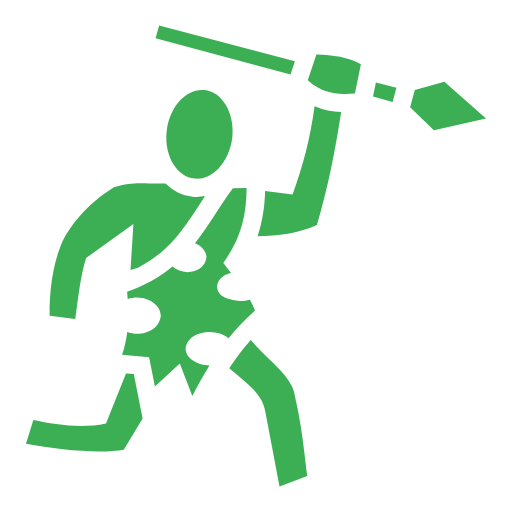
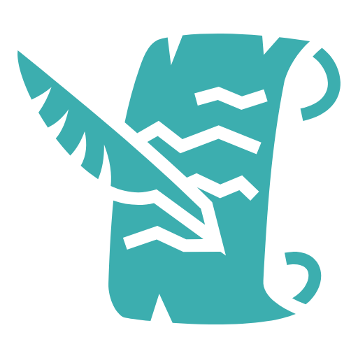
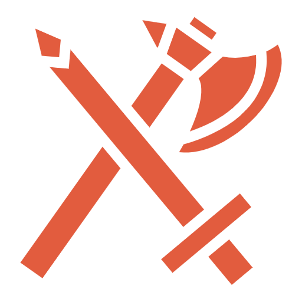
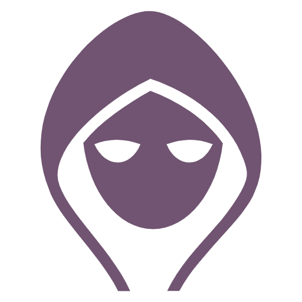

Backgrounds
Acolyte - Servant of the Temple
A man of the church.
A mistress of the gods.
Or a corrupt priest overcome by gluttony and greed.
You have spent your life in the service of a temple to a specific god or pantheon of gods. Choose a god, a pantheon of gods, or some other quasi-divine being, and work with your DM to detail the nature of your religious service.
You must choose a god to follow.
Benefits
As an Acolyte, you and your party can gain free shelter and food in churches, temples or monasteries associated with your religion.
You also have 50% discount on Religion-related weapons
You start with 125
Skills, Training and Language
- You are trained in 1-Handed Maces.
- You can speak a Higher language of choice.
 Charlatan - People's Person
Charlatan - People's Person
You know what people want and you deliver, or rather, you promise to deliver.
You have always had a way with people. You know what makes them tick. It's a useful talent, and one that you're perfectly willing to use for your advantage.
Benefits
Whenever you Long Rest in a town or city, you can roll 1d10 - 5. Add (or subtract) that number as a percentage to your current gold.
Example: You roll 7, 7 - 5 = 2%. If you had 200 gold, you now have 204.
Example: You roll 2, 2 - 5 = -3%. If you had 200 gold, you now have 194.
You start with 350
Skills, Training and Language
- You know a few phrases in all other Common languages. Enough to fool, but not enough to carry a conversation.
Criminal - Law Breaker
You're far closer than most people to the world of murder, theft, and violence that pervades the underbelly of civilization, and you have survived up to this point by flouting the rules and regulations of society.
Benefits
By spending 2 hours in a town or city, you can learn about someone's secret or a secret thing about that town (make an Investigation check).
You start with 100
Skills, Training and Language
- You are trained in Daggers
- You speak Thieves' Cant.
Entertainer - Center of Attention
We don't make mistakes, just happy little accidents.
You thrive in front of an audience with you majestic lute, stunts or vocal mastery. Whatever techniques you use, your art is your life.
Benefits
When talking to someone, you can roll Perception to learn that person's mood.
Every 4 hours spent in a tavern or the streets of a city, roll 1d20 and gain that much gold.
You start with 225
Skills, Training and Language
- One Common language of choice.
Folk Hero - Champion of the People
Destiny calls you to stand against the tyrants and monsters that threaten the common folk!
You previously pursued a simple profession among the peasantry, perhaps as a farmer, miner, servant, shepherd, woodcutter, or gravedigger. But something happened that set you on a different path and marked you for greater things.
Benefits
You start with a riding horse/mule or a non-combat regulat pet, such as a cat or a dog.
Tavern stay and food are free for you and your party.
Even if your class doesn't let you pick Charisma as a stat from the Choose 2 option, you can pick it.
You start with 200
Skills, Training and Language
- You are Trained in Riding and one single weapon.
Folk Villain - The Living Myth
Legend says about you and your malevolent deeds, about your plots and mischieves...
You are notorious among common folk. People have heard about you, but many have not seen it with their own eyes. They talk about the lord in the black temple, the lone savage in the forest or the wizard atop the tower, in the center of the town.
Benefits
You start with a non-combat pet, such as a Cat, a Raven or a Rat.
Even if your class doesn't let you pick Wisdom as a stat from the Choose 2 option, you can pick it.
You start with 150
Skills, Training and Language
- You have 1 extra Skill Points to spend.
- You speak Ancian (Old Common)
Knight - Paragon of Chivalry
A privilege to be respected by others, but also to respect yourself.
A knight is a person granted an honorary title of knighthood by a monarch, bishop or noble, in return of your total servitude, in both combat and noble duty.
Benefits
You carry a special recognizable Knight's sign.
You have 25% discount on Mounts and Blacksmith services.
You start with 350
Skills, Training and Language
- Shields and 1 Weapon of choice.
Noble - The Aristocrat
Is your family old and established, or was your title only recently bestowed?
You might be a pampered aristocrat unfamiliar with work or discomfort, a former merchant just elevated to the nobility, or a disinherited scoundrel with a disproportionate sense of entitlement. Or you could be an honest, hard-working landowner.
Nevertheless, ask yourself: what made you quit this confortable life for adventuring?
Benefits
You start with a set of noble's clothes.
By rolling a Knowledge check on a person, you can regocnize if that person is of noble descent.
You start with 550
Skills, Training and Language
- You are trained in Riding.
- You speak 1 Common language of choice.
Outlander - The Lone Wolf
Few live to see the beauty of these lands, for they can't see the forest from the trees.
You grew up in the wilds. You've witnessed the migration of herds larger than forests, survived weather more extreme than any city-dweller could comprehend, and enjoyed the solitude of being the only thinking creature for miles in any direction.
Benefits
When in an unknown territory, you can roll a Perception check. If you succeed, you know whether you are trespassing or not.
When outside, you can roll a Craft check and find one or more mundane items, such as torches, rations, etc (up to the DM how many or what).
You start with 0
Skills, Training and Language
- You have 1 extra Skill Points to spend.
- You have +2 Survival
- You are trained in Quarterstaves and Longbows.
 Peasant - Commonfolk
Peasant - Commonfolk
You spent all your life dreaming big, of leaving home and seeking a higher purpose.
The time has come: pack up your bag, pick up your whatever you have and sleep well, for tomorrow your life is about to change.
Follow your calling as a hero!
Benefits
You start with a Pitchfork, Sling, Shovel (Pickaxe) or Poor Man's Mallet.
While in a rural village, you can sell common goods for their full price.
Once per lifetime, you can make yourself or an enemy reroll a roll. Make up a story about how your luck affected the outcome of that roll!
You start with 50
Skills, Training and Language
- You have +2 Luck
- You are trained in one of Trident (Pitchfork), Sling, Pickaxe or Poor Man's Mallet.
Sage - Loremaster
Your efforts have made you a master in your fields of study.
You spent years learning the lore of the multiverse. You scoured manuscripts, studied scrolls, and listened to the greatest experts on the subjects that interest you.
Benefits
Choose one spell from the Amateur Spell List and learn it permanently
You start with 200
Skills, Training and Language
- You have +1 History and +1 Knowledge
- One Higher language of choice.
Sailor - Person of the Sea
There's only one thing a man can be more in love with than a woman: the sea!
You sailed on a seagoing vessel for years. In that time, you faced down mighty storms, monsters of the deep, and those who wanted to sink your craft to the bottomless depths.
Benefits
You get 50% discount on voyages over water.
You instantly succeed Monstrology rolls for water-specific creatures.
You start with 150
Skills, Training and Language
- You have +2 Use Rope
- You are trained in Sailing
Soldier - Brother in Arms
War has been your life for as long as you care to remember.
You trained as a youth, studied the use of weapons and armor, learned basic survival techniques, including how to stay alive on the battlefield.
Benefits
You have +1 Initiative.
You know 1 extra Maneuver.
You start with 225
Skills, Training and Language
- You have 1 extra Skill Points to spend.
- One weapon type of choice (e.g. 1-Handed Melee)
Ruffian - Street Scoundrel
The streets have ears, eyes... they can hear, see and smell everything.
You grew up on the streets. You had no one to watch over you or to provide for you, so you learned to provide for yourself. You fought fiercely over food and kept a constant watch out for other desperate souls who might steal from you.
Benefits
You start with a non-combat pet, such as a Dog, a Cat or a Mouse.
You start with 50
Skills, Training and Language
- You are trained in Daggers, Slings and Unarmed.
- You speak Thieves' Cant.